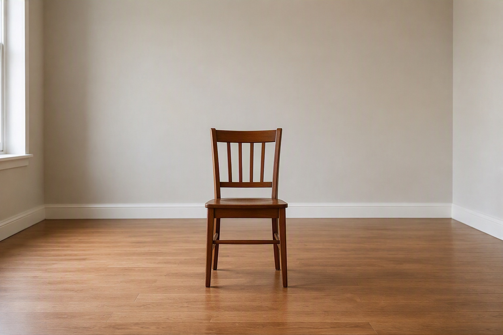
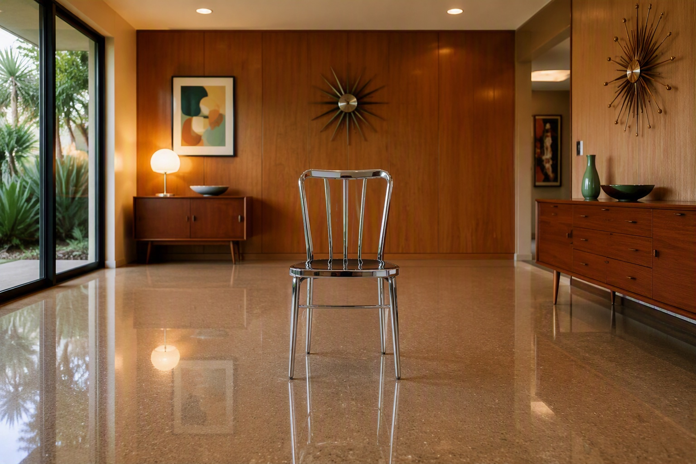
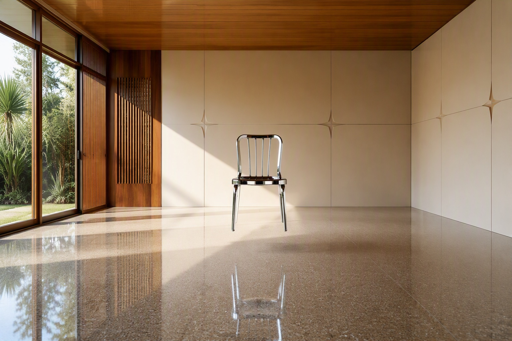
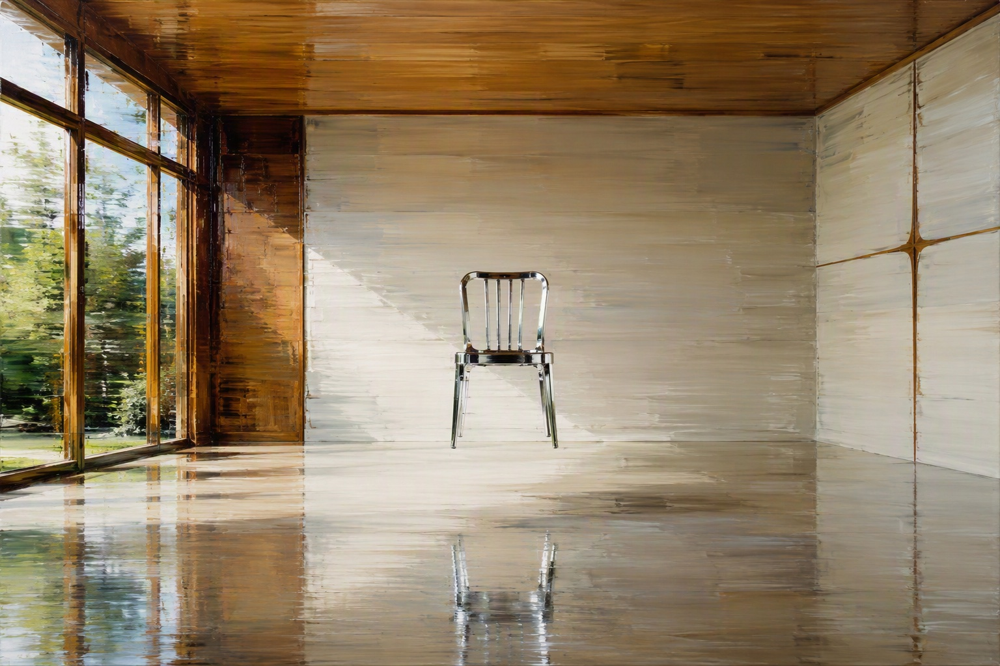
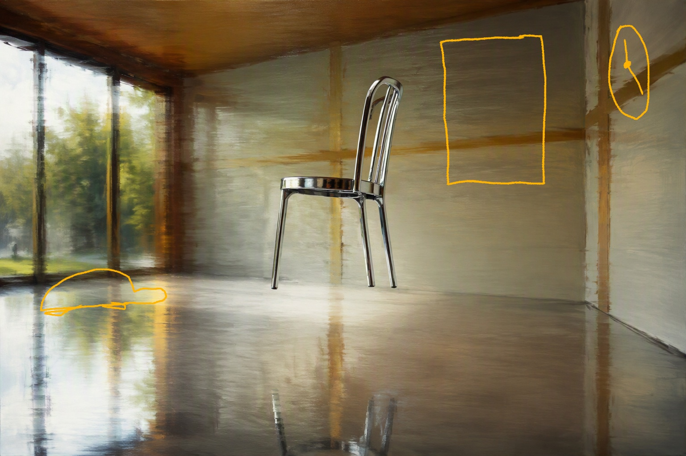
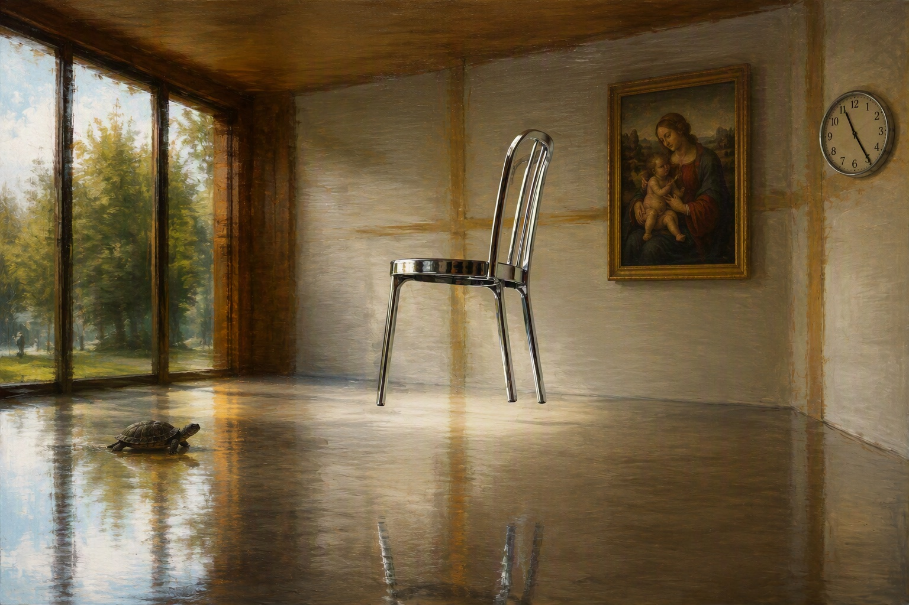
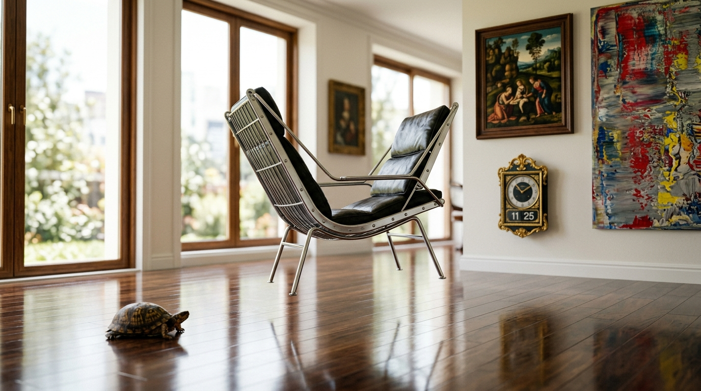
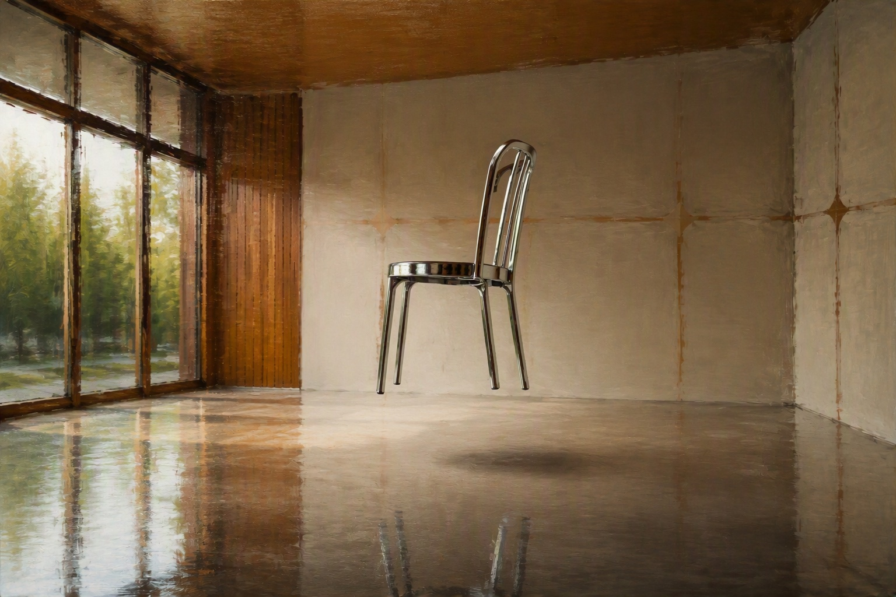

01
The bare prompt
a chair in the middle of a room.
ART 3041 · one prompt, built up nine times
Every image here came out of Copilot except 08, which is Gemini. Each card shows what was typed to get it.

a chair in the middle of a room.

a chrome chair in the middle of a shiny mid century room.

a chrome chair floating in the middle of a shiny mid century room in the middle of the day. There are no other objects. The walls are clean with midcentury accents, the windows are framed with midcentury wood detailing.

…oil painting in the style of Gerhard Richter.
…Shot from the right corner of the room with a zoom on the side of the chair in 16:9 format. f stop 1.2.

Drawn on by hand and handed back to it. Words are not the only input.

I marked up the photo. add the turtle on the floor. the yellow rectangle should be a renaissance oil painting and the clock on the right wall is at 11:25.

now can you give me a prompt for a different image generator based on this image?

this is a good start but the biggest issue is that the chair isn’t floating, it’s still sitting on the floor.